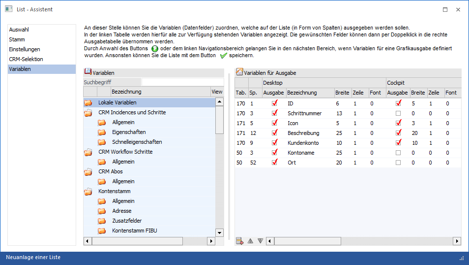
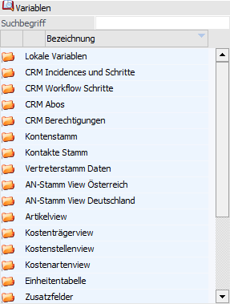
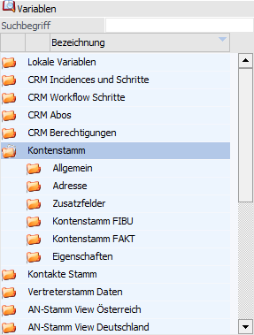
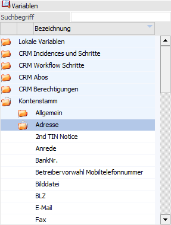
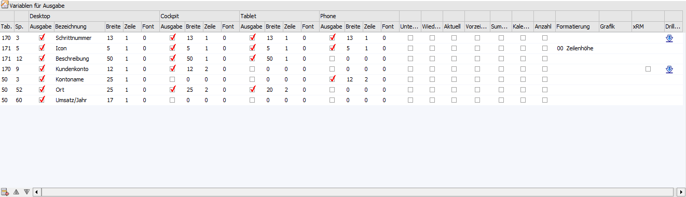
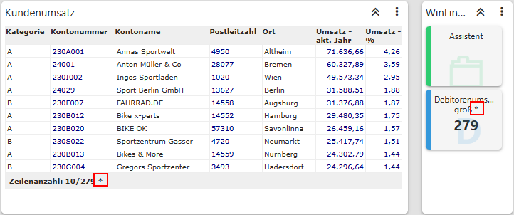
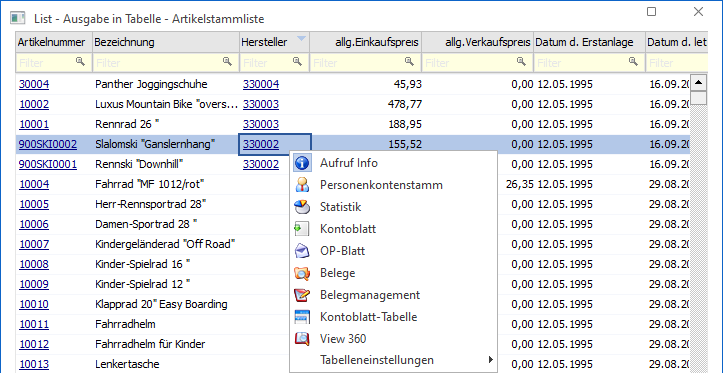
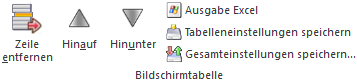

In dem Bereich "Variablen" wird definiert, welche Werte (Variablen) auf der Liste gedruckt bzw. ausgegeben werden sollen. Die Feldauswahl ist vom Datenbereich (Typ der Liste) abhängig, welcher als Basis gewählt wurde (siehe Feld "Listentyp" im Bereich "Stamm").

Im linken Bereich des Fensters werden die zur Verfügung gestellten Variablen angezeigt, im rechten Teil jene Variablen, welche ausgegeben werden sollen.
Hinweis
Die Datentabellen "Lokale Variablen", "Formeln" und "Benutzerdefiniert" werden in dem Kapitel Exkurs detailliert erläutert.
Variablen
In der linken Tabelle werden alle Datentabellen, Datenbereiche und Variablen angezeigt, die bei der Auswahl verwendet werden können.
Die Übernahme / Zuweisung der Variablen kann per Doppelklick bzw. mit Drag & Drop (in die rechte Tabelle) erfolgen.
Innerhalb der linken Tabelle werden die Datentabellen mit ihren Bereichen und Variablen hierarchisch dargestellt, wobei zuerst immer die Datentabellen (1. Ebene) und die Datenbereiche (2. Ebene) der verfügbaren Variablen angezeigt werden.
ü 1. Ebene - Datentabellen
In der
ersten Ebene werden die Datentabellen dargestellt, die in der Liste verwendet
werden können.

ü 2. Ebene - Datenbereiche
Durch
einen Doppelklick auf das Symbol in der ersten Spalte wird die darunter
liegende Ebene der Datenbereiche angezeigt. Z.B. ist die Tabelle "Kontenstamm"
u.a. in die Bereiche "Allgemein", "Adresse", "Kontenstamm FIBU" und "Kontenstamm
FAKT" untergliedert.

ü 3. Ebene - Variablen
In der
dritten Ebene werden dann die verfügbaren Variablen angezeigt, die in der Liste
ausgewertet werden können.

Ø Suchbegriff
Neben der manuellen Auswahl kann mit Hilfe des Suchbegriffs schnell und einfach nach den gewünschten Variablen gesucht werden. Hierfür wird der Begriff eingegeben und bestätigt, wodurch nur mehr jene Tabellen / Bereiche / Variablen angezeigt werden, welche dem gesuchten Suchbegriff entsprechen.
Hinweis
Mit Hilfe der rechten Maustaste (Funktion "Spalten anzeigen/verstecken") können die zusätzlichen Felder "View" und "Var" eingeblendet werden. Damit ist schon vor der Auswahl der Variable die Variablennummer ersichtlich.
Variablen für Ausgabe

Pro Eintrag können die nachfolgenden Felder bearbeitet werden bzw. stehen diverse Informationen zur Verfügung.
Hinweis
Die Einstellungen für "Ausgabe", "Bezeichnung", "Breite", "Zeile" und "Font" können pro Ansicht definiert werden. Welche Ansichten generell zur Verfügung stehen sollen, kann unter "Ansichten" im Bereich "Einstellungen" angegeben werden (die Ansicht "Desktop" steht immer zur Verfügung).
Ø Tab. / Sp.
In den ersten beiden Spalten der Tabelle wird die Herkunft der Variable angezeigt (Tab. = Tabellennummer / Sp. = Spalte der Tabelle).
Ø Ausgabe
An dieser Stelle kann eingestellt werden, ob die Variable ausgegeben werden soll.
Ø Bezeichnung
Hier kann die vom Programm vorgeschlagene Bezeichnung individuell angepasst werden.
Hinweis
Wenn die Liste in weiterer Folge als Cube oder Excel Pivot ausgegeben werden soll, muss darauf geachtet werden, dass keine Bezeichnung mehrmals vorkommt (z.B. "Name" im Personenkontenstamm und "Name" beim Ansprechpartner).
Ø Breite
Hier wird die Länge der Variable (max. Anzahl von Stellen) angezeigt, mit der die Variable ausgedruckt wird. Bei Text-Variablen wird eine max. Breite von 50 Zeichen verwendet (wenn das Feld weniger stellen hat, dann wird dieser Wert genommen), wobei diese Variablen aber als Multiline-Felder ausgegeben werden (d.h. wenn mehr als 50 Zeichen vorhanden sind, erfolgt bei der Ausgabe ein Zeilenumbruch). Dieser Wert kann bei Bedarf verändert werden.
Beispiel
Lt. WinLine handelt es sich bei der Kontonummer um ein 20stelliges Feld. Wenn aber nur maximal 7stellige Kontonummern vergeben wurden, dann ist es sinnvoll, diesen Wert entsprechend anzupassen, da sonst zu viel Platz auf der Liste "verschwendet" werden würde.
Ø Zeile
In diesem Feld kann definiert werden, in welcher Mittelteilszeile der Wert angedruckt werden soll. Damit kann auch ein mehrzeiliger Mittelteil definiert werden.
Ø Font
Aus der Auswahlliste kann der Font ausgewählt werden, mit dem die Variable gedruckt werden soll. Dabei werden die Fonts gemäß der Einstellung im CWLCTK (Bereich "Edit mesonic Fonts - Other Fonts - PDB on Printer") vorgeschlagen, wobei die Schriftart, Schriftgröße und Schriftattribut angezeigt werden.
Ø Unterdrücken
Wird bei einer Variablen diese Checkbox aktiviert, dann wird die Ausgabe des kompletten Datensatzes unterdrückt, wenn der Wert der Variable 0 (numerische Variable) oder NULL (alphanumerische Variable) ist.
Beispiel
Die Option "Unterdrücken" wird für die Variable "Umsatz/Jahr" aktiviert. Dadurch werden alle Kunden, die keinen Umsatz erzielt haben, nicht angedruckt / ausgegeben.
Achtung
Wird eine Unterdrückung über eine Variable des Bereichs FIBU-Salden bzw. Formeln durchgeführt, so kann die korrekte Ermittlung der Zeilenanzahl für die Cockpitanzeige nicht gewährleistet werden. Hierauf wird durch ein * aufmerksam gemacht.

Ø Wiederholungsunterdrückung
Wird diese Checkbox aktiviert, dann wird bei der Ausgabe die entsprechende Variable nur einmal gedruckt.
Beispiel
Es wird eine Auswertung der Statistik, sortiert nach Kundennummer, erstellt, wobei der Kunde " 230M003 - Maierhofer & Fessler" 300x vorkommt. Wird bei den Variablen "Kundennummer" und "Kundenname" die Option "Wiederholungsunterdrückung" aktiviert, dann wird die Kontonummer "230M003" und "Maierhofer & Fessler" nur einmal gedruckt, bei den weiteren Zeilen bleiben diese Felder leer und es werden nur mehr die restlichen Felder (z.B. Menge, Preis, Rohertrag etc.) gedruckt.
Ø Aktuell
Durch Aktivieren dieser Option kann eine Abfrage auf einen "aktuellen" Wert erfolgen, d.h. es wird bei Ausgabe der Liste auf den entsprechenden Wert eingeschränkt, ohne dass ein extra Filter hierfür definiert werden muss. Grundsätzlich steht diese Funktion bei den folgenden CRM-Variablen zur Verfügung:
ü Tab. 170 / Sp. 005 - Datum Schritt geschrieben = Tagesdatum der WinLine
ü Tab. 170 / Sp. 006 - Startdatum = Tagesdatum der WinLine
ü Tab. 170 / Sp. 007 - Enddatum = Tagesdatum der WinLine
ü Tab. 170 / Sp. 008 - Eskalationsdatum = Tagesdatum der WinLine
ü Tab. 170 / Sp. 009 - Kundenkonto = zuletzt gewähltes Konto
ü Tab. 170 / Sp. 011 - Händlerkonto = zuletzt gewähltes Konto
ü Tab. 170 / Sp. 014 - Artikel = zuletzt gewählter Artikel
ü Tab. 170 / Sp. 028 - Kalender Start-Datum = Tagesdatum der WinLine
ü Tab. 170 / Sp. 029 - Kalender End-Datum = Tagesdatum der WinLine
ü Tab. 170 / Sp. 031 - Projektnummer = zuletzt gewähltes Projekt
ü Tab. 177 / Sp. 003 - UG / Gruppe = Aktiven Schritte des WEB-Benutzers
Hinweis
Der aktuelle Wert für die Datumsfelder ist das Einlogdatum; für Artikel bzw. für Kontonummern ist der aktuelle Wert jener, der in der "globalen" Variable aktuell gesetzt ist (ist auch jener, der in den Favoriten als "aktueller Wert" angezeigt wird).
Achtung
Wird mit der Option "Aktuell" gearbeitet, so wird die CRM-Liste automatisch in der Konteninformation (Aktivierung bei Variable "Tab. 170 / Sp. 009 - Kundenkonto" oder "Tab. 170 / Sp. 011 - Händlerkonto") und / oder der Artikelinformation (Aktivierung bei Variable " Tab. 170 / Sp. 014 - Artikel") - jeweils WinLine INFO - angezeigt.
Ø Vorzeichenwechsel
Bei allen Zahlenfeldern (vom Typ "Double") kann die Option "Vorzeichenwechsel" gesetzt werden. Bei der Ausgabe wird die entsprechende Variable dann umgerechnet und ggfs. mit Minuszeichen angezeigt.
Hinweis
Wird eine Variable mehrfach eingefügt, so wird die Vorzeichenwechsel-Einstellung der ersten Variablen für alle Variablen angewendet.
Beispiel
Die Variable "Umsatz/Jahr" wird mehrfach in eine Liste eingefügt und bei der ersten Variablen wird die Option für Vorzeichenwechsel aktiviert. Bei allen weiteren Spalten "Umsatz/Jahr" erfolgt nun ebenfalls die Anwendung des Vorzeichenwechsels, auch wenn die Option nicht für alle Zeilen gesetzt wurde.
Ø Summierung
Diese Checkbox kann nur bei Variablen aktiviert werden, die numerische Werte beinhalten. Damit kann gesteuert werden, ob über diese Variabel eine Summe gebildet werden soll oder nicht (d.h. es wird hierüber gesteuert, ob die entsprechende Variable im Formular eingebaut wird oder nicht).
Ø Kalender
Diese Spalte steht nur bei den Listtypen "03 - Fakturen O.P.", "09 - Arbeitnehmerstamm", "16 - CRM Workflows", "17 - CRM Aktionen", "18 - CRM Workflows und Aktionen", "19 - Belegzeilen", "23 - Adressen", "27 - Zeitauswertung" und "28 - Belege" zur Verfügung, da diese eine Kalenderausgabe unterstützen. Durch Aktivierung der Option wird definiert, welche Variablen standardmäßig in der Kalenderansicht angezeigt werden sollen.
Hinweis
Generell können im WinLine Kalender alle Variablen der WinLine LIST-Liste zur Kalenderdarstellung genutzt werden. Wurden keine Variablen mit der Option "Kalender" versehen, so erstellt die WinLine von selbst eine Kalenderansicht.
Sollten wiederum wichtige Variablen gänzlich in der Variablendefinition fehlen (z.B. Datums- oder Gruppierungsfelder), so werden diese automatisch an den Kalender übergeben (nähere Information zum Thema "Kalender" entnehmen Sie bitte dem Kapitel WinLine Kalender).
Ø Anzahl
Diese Spalte steht nur bei den Listtypen "16 - CRM Workflows", "17 - CRM Aktionen", "18 - CRM Workflows und Aktionen" und "19 - Belegzeilen" zur Verfügung, da diese eine Kalenderausgabe unterstützen. Für die Darstellung im Kalender können mittels aktivierter Checkbox "Anzahl" die Anzahl der Vorkommnisse pro Tag gezählt werden. So kann man anstelle einer Auflistung aller Termine nur die Anzahl der Termine im Kalender andrucken. Pro Ausgabe kann nur ein Wert für die Ausgabe der Anzahl definiert werden, wobei dieses nur für Variablen möglich ist, welche auch im Kalender angezeigt werden sollen (siehe Feld "Kalender").
Ø Formatierung
Wenn es sich bei dem ausgewählten Feld um ein Datumsfeld handelt, dann kann an dieser Stelle entschieden werden, mit welcher Formatierung das Datum ausgegeben werden soll. Dabei stehen folgende Varianten zur Auswahl:
ü 00 - Standarddatum mit Uhrzeit
ü 01 - Standarddatum
ü 02 - kurzes Windowsformat
ü 03 - langes Windowsformat
ü 04 - Zeit
ü 05 - Jubiläumsdatum (ersetzt bei der Ausgabe des Datums das ursprüngliche Jahr durch das Jahr des Systemdatums)
Standardmäßig wird bei "normalen" Datumsfeldern der Typ "01 - Standarddatum", bei Datumsfeldern einer CRM-Liste "00 - Standarddatum mit Uhrzeit", vorgeschlagen.
Hinweis 1
Diese Einstellung wird bei der Ausgabe auf "Bildschirm / Drucker", im Cockpit, bei der Power-Report-Ausgabe und bei der Ausgabe "Tabellenkalkulation" berücksichtigt. Bei der Ausgabe auf "Tabelle" wird das Datum entweder mit oder ohne Uhrzeit dargestellt (d.h. das lange Windowsformat wird hier mit Datum/Uhrzeit umgesetzt).
Hinweis 2
Handelt es sich um Variablen des Bereichs "Benutzerdefiniert", so können hier Sondereinstellungen getroffen werden (nähere Details entnehmen Sie bitte dem Kapitel Variablenbereich "Benutzerdefiniert"). Gleiches gilt für Variablen des Typs "VB-Script-Formel" (nähere Details entnehmen Sie bitte dem Kapitel VB-Script-Formel).
Ø Grafik
Sofern Zahlenwerte in der Liste vorhanden sind, kann die Liste auch als Grafik ausgegeben werden. Dazu muss ein Wert als X-Achse und ein oder mehrere numerische Werte als Y-Achse definiert werden, wobei hier mehrere Optionen zur Verfügung stehen:
ü X - Achse
Der Wert wird an der
X-Achse angedruckt
ü X1 - Achse Aufsteigend
Sortiert
Der Wert wird an der X-Achse angedruckt, das Ergebnis wird
aufsteigend sortiert.
ü X2 - Achse Absteigend
Sortiert
Der Wert wird an der X-Achse angedruckt, das Ergebnis wird
absteigend sortiert.
ü Y - Achse
Der Wert wird an der
Y-Achse angedruckt, gibt somit die Höhe der Grafik an (Balken, Linie).
ü Y1 - Achse Aufsteigend
Sortiert
Der Wert wird an der Y-Achse angedruckt, das Ergebnis wird
aufsteigend sortiert.
ü Y2 - Achse Absteigend
Sortiert
Der Wert wird an der Y-Achse angedruckt, das Ergebnis wird
absteigend sortiert.
Hinweis
Sobald eine X- und Y-Achsendefinition hinterlegt und die Listdefinition gespeichert wurde, wird auch ein eigener Bereich "Grafik" für die Liste angezeigt, in dem das Ergebnis dargestellt wird.
Ø xRM
Bei der Anlage von CRM-Fällen können sogenannte "Nebenzuordnungen" mit Hilfe der XRM-Tabelle erfasst werden. Durch Aktivierung der Option "xRM" werden die jeweiligen zusätzlichen Objekte in einer separaten Zeile ausgegeben.
Ø DrillDown
In der Spalte "DrillDown" wird in Form eines Symbols angezeigt, ob für die Variable ein DrillDown zur Verfügung gestellt wird. Zur Überarbeitung oder Anlage von DrillDowns steht das Programm DrillDown Matchcode zur Verfügung, welches per Doppelklick aufgerufen werden kann.
ü - Kein DrillDown vorhanden
Es steht kein
DrillDown zur Verfügung.
ü - Standard-DrillDown
Es handelt sich um
ein Feld mit einem direkten DrillDown von WinLine.
ü - Alternativer DrillDown
Mit Hilfe des
Programm "DrillDown Matchcode" wurde ein abweichender bzw. neuer DrillDown für
das Feld konzipiert.
Beispiel
Bei einer Artikelliste wird für das Feld "Hersteller" kein Standard-DrillDown gebildet. Per "DrillDown Matchcode" wurde definiert, dass es sich bei dem Inhalt des Felds um ein Personenkonto handelt.

Tabellenbuttons

Ø Zeile entfernen
Durch Anklicken des Buttons "Zeile entfernen" kann eine bereits ausgewählte Variable wieder gelöscht werden.
Ø Hinauf / Hinunter
Durch Anklicken des Buttons "Hinauf" bzw. "Hinunter" kann die Reihenfolge der Variablen (d.h. der Ausgabe) noch verändert werden.